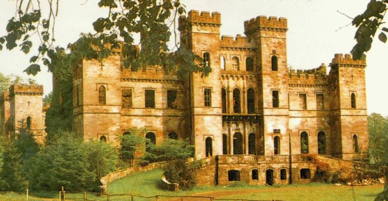
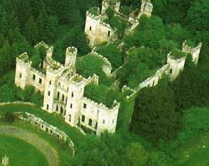

Origin of the Name The name's origin came from a nearby landmark -- Loudoun Hill. The ancient Scotto - Saxon word Law or Low, meaning "fire" and the Scotto - Irish word Dun, meaning "hill" fits well with the fact that Loudoun Hill is an ancient volcano. Ancient settlements near Loudoun Hill can be traced back to the Neolithic Age (4000-2400 B.C.) lending much credence to this theory. Another theory is that the name comes from the Celtic loddon meaning "marshy ground." Its high ground made Loudoun Hill a strategic stronghold and many battles were fought and forts built nearby. The Romans occupied and built a fort a few hundred yeards from Loudoun Hill in 80 A.D. Vykings were a considerable influence and built several forts nearby between 800-1200 A.D. The Lands of Loudoun were granted to James de Lambinus in 1169 by Richard de Morvelle, High Constable of Scotland under King Wiliam I, The Lion. James, of Norman descent, took the name James de Lowdun upon receipt of the lands. "Lowdun" was changed over time to "Loudoun." The Loudoun's are a sept of the Campbell clan (Campbell of Loudoun) and were known for their fierce defense of Scotland's Lowlands in the 13th and 14th centuries. |
| Loudoun Castle
The present castle is located near Galston (20 km South of Glasgow). The present castle is the 5th on the site and was often called the "The Windsor of Scotland" for its elegance. It was built in the early 1800s and burnt down during WWII. It was not restored. Instead it was given to Scotland as a National Heritage Landmark. |
 |  |